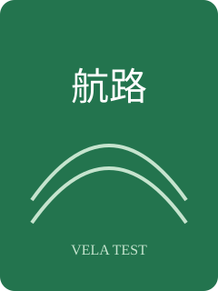

VELA TEST WORKSPACE
航路
在文件标签右侧点击“预览”，这张页面应留在原来的源码区域中。
第一章 灯塔
清晨，领航员在旧日志中发现了一条通往东方的航路。
第二章 海岛
本地样式、SVG 图片、表格和窄屏布局都应正常显示。
| 章节 | 进度 |
|---|---|
| 灯塔 | 已完成 |
| 海岛 | 修订中 |

VELA TEST WORKSPACE
在文件标签右侧点击“预览”，这张页面应留在原来的源码区域中。
清晨，领航员在旧日志中发现了一条通往东方的航路。
本地样式、SVG 图片、表格和窄屏布局都应正常显示。
| 章节 | 进度 |
|---|---|
| 灯塔 | 已完成 |
| 海岛 | 修订中 |